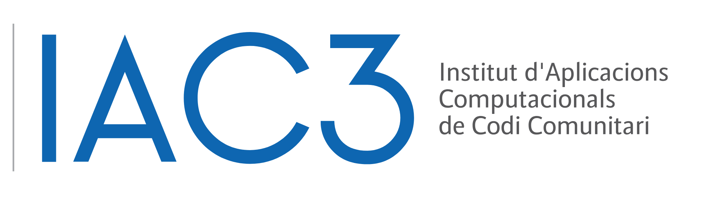
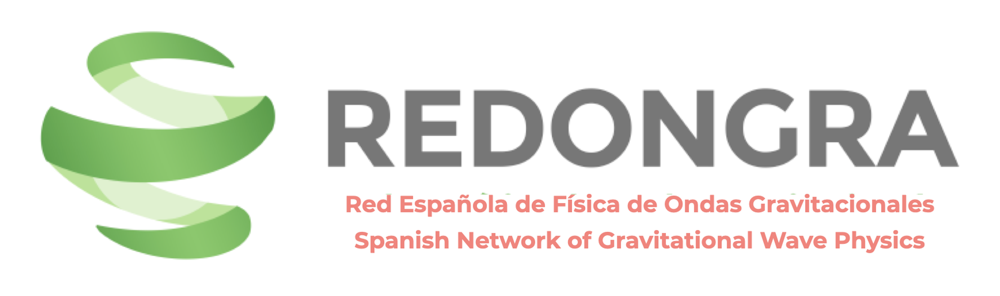
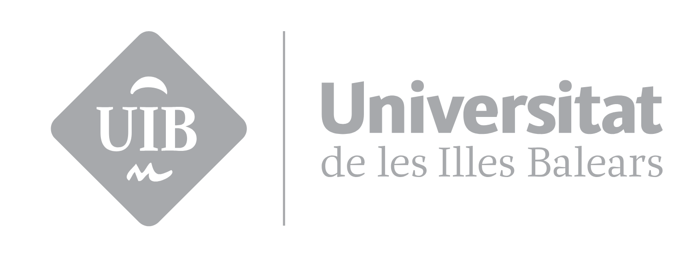

Workshop overview
The CUWav face-to-face meeting is intended first and foremost as a working meeting for the members of the waveforms coordination unit, while also bringing in colleagues from other units whose activities intersect with waveform modelling, simulation, validation, pipeline development, and data-analysis interfaces. The immediate aim is to make concrete scientific and technical progress, but also to strengthen the shared direction of the DDPC programme through direct discussion, planning, and cross-unit exchange.
This public page is designed both as a practical information point for participants and as a concise outward-facing description of the meeting. It highlights the scientific context, the workshop goals, the preliminary programme, and the local venue arrangements in Palma.
Meeting information
IAC3 / Parc Bit
Carrer Blaise Pascal 6
07121 Palma, Spain
The local organisers are Antoni Ramos Buades, Cecilio Garcia Quiros, Jorge Valencia Gomez, and Sascha Husa.
What is LISA?
LISA, the Laser Interferometer Space Antenna, is a space-based gravitational-wave observatory led by ESA and planned for launch in the mid-2030s. Using three spacecraft in heliocentric orbit, arranged as a 2.5-million-kilometre triangular interferometer, LISA will observe low-frequency gravitational waves from massive black-hole mergers, compact galactic binaries, and a range of other astrophysical and cosmological sources.
Spain is one of the key countries contributing hardware to ESA for LISA. Beyond hardware, scientific participation is organised across several complementary structures, including the DDPC, the LISA Consortium, and the LISA Science Team. Within that landscape, the DDPC is responsible for the development and operation of the European science data-processing pipelines, while the LISA Consortium provides a large international framework for preparing the scientific exploitation of the mission.
Mission concept
The observatory consists of three spacecraft separated by millions of kilometres, linked by precision laser interferometry to measure tiny spacetime distortions.
Scientific targets
LISA will probe massive black-hole mergers, galactic compact binaries, and other sources inaccessible to ground-based detectors.
Why this matters here
The work discussed at this meeting feeds into waveform modelling, interfaces, validation, and pipeline development relevant to DDPC preparations.
Goals of the workshop
The workshop is designed to accelerate technical and scientific progress through a concentrated in-person format. In particular, it aims to bring together CU-WAV members, along with participants from other related units, to compare status, identify common needs, align interfaces, and advance the DDPC programme in a coordinated way.
Exchange progress
Share updates across waveform development areas, simulation efforts, validation work, and related infrastructure.
Clarify interfaces
Discuss how waveform tools connect to broader analysis pipelines, common tooling, and data products.
Plan next steps
Use direct discussion to define concrete actions for 2026, identify bottlenecks, and strengthen collaboration across units.
Programme
Preliminary schedule for the meeting, adapted from the internal agenda and presented here in a cleaner public format.
| CET | Monday 23 March | Tuesday 24 March | Wednesday 25 March |
|---|---|---|---|
| 09:00 | Welcome coffee | ||
| 09:30 |
CU-Wav unit updates EMRIs · SOBH · MBHB · Cosmo · Burst |
CU-SIM post-mortem Mojito · JAX · LISA response · plans for 2026 Tutorial on Mojito package / build bricks? TBC |
SysTeam / PAQA Tutorial on SonarCube Update from CU-L01 PA/QA Experience with Lolipops? |
| 11:00–11:30 | Coffee break | Coffee break | Coffee break |
| 11:30 |
Consortium updates WFWF overview · common tools · memory project · consortium–DDPC relation |
CU-L2D Recap · usage of wfs · interfacing and kinds of inner products · pipeline use Mojito Lite validation · Mojito Heavy plan · plans for 2026 |
CU-Wav Parameter-space coverage for MBHBs in Mojito Heavy MBHB mismatches project + LISA research Review pipeline development session: tools and tests |
| 13:00 | Lunch break (13:00–14:30) | Lunch break (13:00–14:30) | CU-Wav call |
| 14:00 | End of formal programme | ||
| 14:30 |
Waveform generators pyseobnr · phenomxpy · FEW 15' + 10' format |
CU-L2D tutorial / discussion “Public” global-fit pipeline · update from Balrog Discussion session · waveform-accuracy figures of merit |
|
| 15:00 | Desk space will be available for participants who would like to remain on site for afternoon discussions. | ||
| 15:30 | Participants wishing to visit for additional days are welcome to contact the local organisers. | ||
Institutional support
The meeting is supported locally and nationally through the involvement of IAC3, REDONGRA, and the Universitat de les Illes Balears (UIB). Their support helps make the scientific programme, local organisation, and broader visibility of this activity possible.


